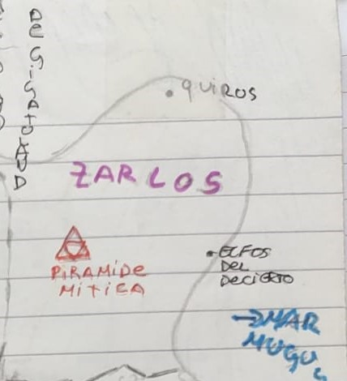
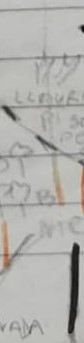
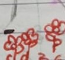
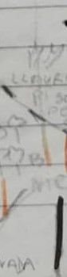
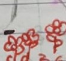
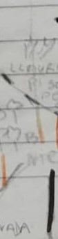
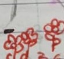

Mapa de Corsalia

 





Corsi
Mapa de Corsalia
En la región de Corsi se encuentra la ciudad de Tropolis, también conocida como la ciudad Universidad. Considerada por todo el mundo como el centro del saber, Tropolis alberga la mayor cantidad de escuelas universitarias del continente, entre ellas Esteller la gran academia de magia, casa de grandes magos de la historia.
Zarlos
Mapa de Corsalia
En Zarlos se ubica el gran desierto, extensiones inmensas de arena. Los pocos poblados que se encuentran en dicha región se los puede encontrar en las costas, siendo grandes centros comerciales. Se dice que en el medio del desierto se encuentra la Gran pirámide Mítica, una construcción tan antigua que poco se sabe de ella.
Tirobasia
Mapa de Corsalia
Una tranquila región de reinos dedicados especialmente a la agricultura y ganadería. En ella se puede encontrar la gran llanura de los duendes, llamada así por la creencia de que en ella se han visto estas especies de seres, aunque nadie nunca lo pudo comprobar.
Farsing
Mapa de Corsalia
Una gran región donde al sur se encuentran las grandes montañas en las cuales se dice que los dragones haces sus nidos. Aunque es poco habitual se ha visto volar algunas de estas criaturas cerca de los picos y si uno vive cerca de las montañas y presta atención se puede escuchar algunos rugidos entre los lejanos valles de la cordillera. También en esta región se encuentra uno de los Volcanes más importantes, el volcán Tiro, se dice que en centro de él habita el dios del fuego Yagos.
Ramasia
Mapa de Corsalia
En Ramasia se encuentra el Árbol Mágico, un roble de inmensas proporciones donde los Hijos de Hegromid, vulgarmente conocidos como elfos, han construido una de las ciudades más importantes de su reino. No se encuentra lejos de ser uno de los centros más importantes del saber, justo detrás de Tiropolis.
Climania
Mapa de Corsalia
En climania una de las ciudades más importantes del continente, la ciudad de Mitic, capital de lo que fue uno de los imperios más grandes del mundo, pero que en estos días se vio reducido a un pequeño reino comparado con lo que alguna vez fue. Históricamente considerado como el origen del saber y la lengua común, la influencia de ese gran imperio se sigue apreciando hasta los días presentes.
Origamia
Mapa de Corsalia
Una de las dos regiones más al sur del continente, Origamia consta de grandes llanuras cubiertas de nieves eternas. Se dice que en dicha región uno puede encontrarse con criaturas temibles como los lobos gigantes o el gran oso blanco, sin contar de los dragones fríos, criaturas que son evitados mencionar en los cuentos por el terror que generan.
Chiluana
Mapa de Corsalia
El segundo desierto más grande del continente, pocas ciudades se pueden encontrar en él. Una de las más importantes se encuentra a las periferias de las Grandes Ruinas. Un lugar donde se siente magia antigua y desconocida, pero a su vez donde las excavaciones han encontrado grandiosos artilugios de una civilización ya olvidada, pero por lo cual la gente esta dispuesta a pagar mucho dinero.
Girasolandia
Mapa de Corsalia
La segunda región más al Sur, Grisolandia, consta del único bosque de girasoles gigantes, un lugar del cual poco se puede decir por lo extraño que es; y además se Encuentra el cráter de un antiguo meteorito, lugar al cual nadie se ha acercado, los pocos que fueron no volvieron y si lo hicieron estaba tan locos que ya no podían vivir en sociedad. Estos últimos no paraban de delirar acerca de gigantes, historias que nunca se pudieron comprobar.